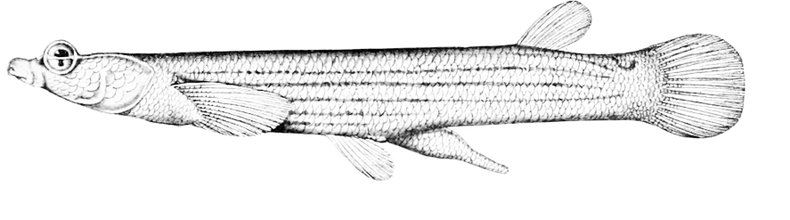

Finds which taxa observed in an iNaturalist project or by an iNaturalist user are still missing a Wikipedia article — inspired by iNotListed, powered client-side by Comunica federating live SPARQL endpoints. No backend, no build step — open this file and it runs.
Proposed QuickStatements to add the iNaturalist taxon id to every matched item below that's missing one — review before running, same as any other batch edit.
| Taxon | Image | iNaturalist | Wikidata | GBIF | Commons | en | ja | es | pt | Plazi | BHL |
|---|
project_id= / user_id=, both accept a
slug/login or a numeric id) and collects the distinct taxa (scientific name, common
name, photo, iNaturalist taxon ID).
wdt:P225)
and pulls cross-reference identifiers already stored on it: GBIF (P846),
iNaturalist taxon (P3151), Wikimedia Commons category (P373).
QLever's copy of Wikidata is a periodic dump import, not a live feed — checked directly,
it's currently about six weeks behind (via wikibase:Dump schema:dateModified,
QLever's own build-time metadata). That's harmless for a match — an item that
existed six weeks ago still exists — but a taxon QLever finds nothing for might just be
too recent for the snapshot, not genuinely absent from Wikidata. So only the taxa QLever
comes back empty on get a second, live check against the official Wikidata Query Service;
everything QLever already answered is trusted as-is. This keeps the fast path fast (QLever
alone, no WDQS rate-limiting) while avoiding the false-negative case that actually matters
here: mistaking "too new for the mirror" for "not on Wikidata" is exactly what would make
the "propose QuickStatements" feature below draft a duplicate. A name match alone doesn't
mean the two records are cross-linked, though — the matched item may still lack
P3151 back to this exact iNaturalist taxon. That case gets its own
⚠ no iNat ID marker in the Wikidata
column, a "link iNat ID" one-line QuickStatements action, and its own stat card and filter,
separate from the Wikipedia-coverage numbers below. The opposite problem — an item
carrying two or more different P3151 values, e.g. an old iNaturalist
taxon id left behind after a merge/split — gets its own
⚠ N iNat IDs — needs review marker, stat
and filter too, but no automated fix: this tool only ever proposes additions, and deciding
which existing statement is the stale one to remove needs a curator checking iNaturalist
directly, not a guess.
sitelink exists (schema:about / schema:isPartOf);
anything missing is the "not listed" signal this tool is for. Only taxa with no
sitelink in any language get re-verified against live WDQS — missing just one or two of
Japanese, Spanish or Portuguese isn't re-checked, since species coverage in those
languages is inherently sparse and re-querying WDQS for every such partial case is what
was overloading it; a stale
"missing" for a taxon with no sitelinks at all would wrongly send someone to write an
article that already exists. Batches are paced 200ms apart and a 429
gets a longer, dedicated backoff rather than the same short retry as any other error —
both public endpoints can still rate-limit or time out under real load (a single
iNaturalist user's full observation history, or this tool's own testing volume on a given
day), in which case a step logs the failure — in amber, since a handled fallback isn't a
real error — and moves on with whatever QLever alone already found rather than hanging
indefinitely. The status header shows which of the 5 pipeline steps is running
(Step 3/5: …) and, once a step is a few batches in, a live
batch 12/58 (~1m 40s remaining) estimate based on that step's own pace so
far — not a single upfront total, since a QLever batch and a WDQS batch cost wildly
different amounts and there's no honest way to know which a step will hit before it runs.
qlever.ld.plazi.org/sparql)
for how many published treatments exist for each species (dwc:genus +
dwc:species, joined to treatment:augmentsTaxonConcept /
definesTaxonConcept). Plazi's coverage is the opposite shape of BHL's here —
narrow (only taxa with a digitized taxonomic revision or original description) but,
when present, precise: exact treatment title, DOI and author.
koetai.semscape.org) with a federated SPARQL query: it starts in
a named graph of BHL page metadata (Darwin Core terms), then reaches out via
SERVICE to QLever for the Wikidata item and identifiers, and a nested
SERVICE to WDQS for the Wikipedia sitelink — three data sources, one query,
no data ever copied between them. Coverage in this graph is experimental and partial.
CC0 / CC BY / CC BY-SA — not the NC or ND
variants, which Commons doesn't accept), a batched query checks whether that exact
iNaturalist photo has already been uploaded: Commons structured-data files sourced from
iNaturalist carry a "source of file" (P7482) statement whose "described at
URL" (P973) qualifier is the photo's inaturalist.org/photos/<id>
page — that's the join key. Already-uploaded files are linked directly (and their
filename is used to fill the stub draft's infobox image); new ones get a "prepare
upload" panel.
Special:Upload form using the same upload-by-URL mechanism
as Tarsier:
no OAuth, no file passing through this page — Commons fetches the photo itself, from a
source host on Commons' own live domain allow-list (checked in real time; iNaturalist's
photo host is on it). You still need a Wikimedia account and click "Upload file" yourself
on Commons to actually publish it.
{{Speciesbox}} on English
Wikipedia, {{Ficha de taxón}} on Spanish, {{生物分類表}} on
Japanese, {{Info/Taxonomia}} on Portuguese) plus a lead sentence and
{{Taxonbar}}. These are drafts only — nothing is ever posted
automatically; review formatting, the stub template and notability before publishing.
The lead sentence is never cited to iNaturalist — it's user-generated content, not a
reliable source under Wikipedia's policy — so it stays marked
{{citation needed}} until you pick a real one from this taxon's BHL
literature on its curation page (below). A ==Taxonomy== section is also
included, built by cross-checking the classification independently against iNaturalist,
GBIF and NCBI Taxonomy and calling out any rank where they disagree, rather than quietly
picking one. The infobox image can also be picked from images already on Wikidata or
Commons for the taxon (on the curation page), instead of only from a fresh observation
upload — useful for an already well-documented taxon where uploading a duplicate would
be pointless. And when GBIF's authorship data parses cleanly, a "first described by"
sentence is added, cited to GBIF's own record of the original publication.
CREATE one, sourced entirely from the linked databases this
page already talks to: taxonomic rank from iNaturalist, a backbone taxon id from a live
GBIF name match, and a taxonomy id from a live NCBI Taxonomy name match — plus a label in
both en and mul (taxon names don't vary by language; an item
with only one language label trips Wikidata's "label in language" constraint, caught by
actually running a batch and checking the result). The parent
taxon's own Wikidata item is resolved independently against each lineage —
iNaturalist's ancestor name, GBIF's own parent id (genus/family/order/… key, matched to
the taxon's own rank) joined against P846, and NCBI's taxid for that same
ancestor joined against P685 — rather than trusting whichever answers first.
When the lineages agree, every one of them that confirmed it becomes its own reference on
the single P171 statement; when they land on different Wikidata items, that
divergence is surfaced in the panel instead of silently picked one way — a genuine
disagreement between databases is exactly the kind of thing worth a human's attention, not
a bug to paper over. This drafts an edit — it never runs one; review it and paste it into
QuickStatements yourself.
P12022 (iNaturalist user ID); a project has no dedicated
Wikidata property, so it's checked against P856/P973 (official
website / described at URL) for a link to its iNaturalist page instead — both patterns
already in real use on Wikidata. Not linked? For a user, an iNaturalist profile's ORCID
(when set) is checked against P496 first — far more reliable than matching by
name — before falling back to a plain label search; a project only has the label search.
Either way you get a QuickStatements draft: add the identifier to a candidate that turned
up, or create a new item outright. New-human-item drafts carry an explicit notability
warning — being an iNaturalist contributor alone doesn't make someone notable on Wikidata.
#taxon=<id> URL) with everything outstanding for
it already shown — no click-to-reveal, unlike the table. Whichever Wikidata action applies
and a drafted stub for every still-missing language render immediately, ready to review and
copy — each stub panel also has a picker for this taxon's BHL literature, to cite the lead
sentence with a real source instead of leaving it {{citation needed}}. Same
underlying data and actions as the table row, just laid out for working one taxon at a time
instead of scanning many at once.
Query timings for the current run are logged below the status line while it runs.